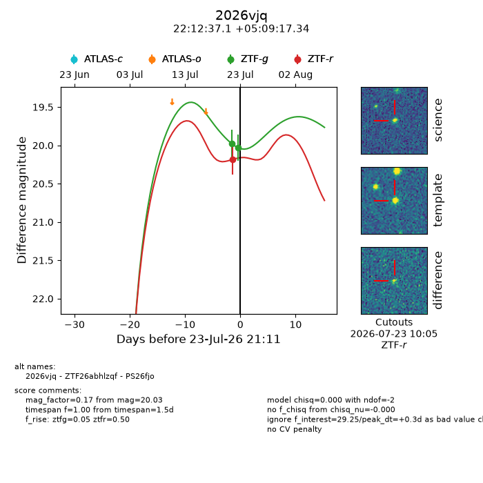
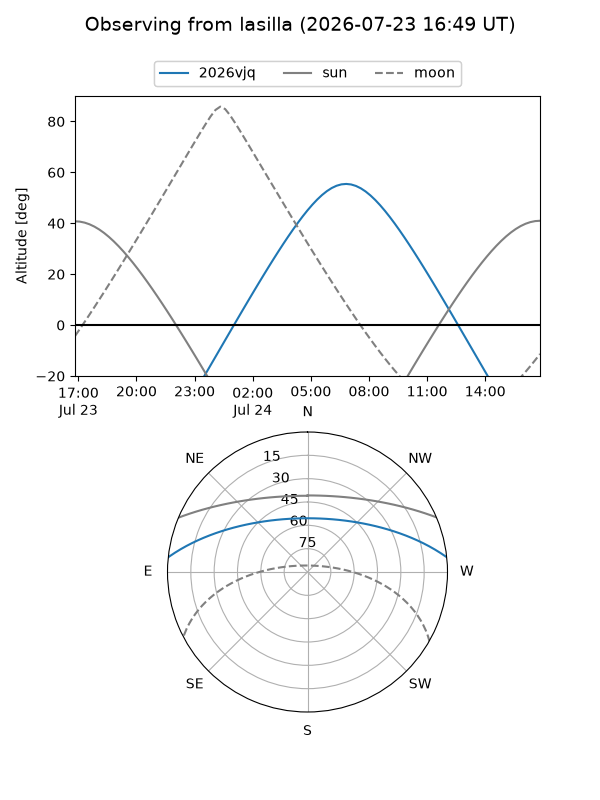
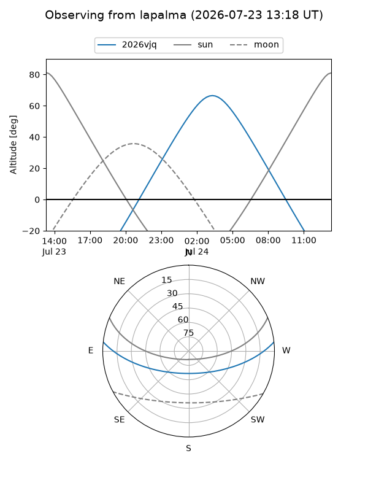
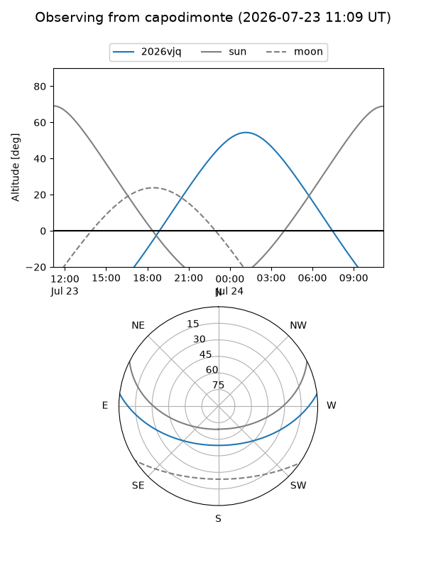
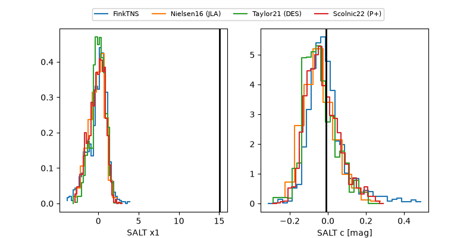

2026vjq
Target 2026vjq at 2026-07-23 21:14
Aliases and brokers:
FINK-ZTF: ztf.fink-portal.org/ZTF26abhlzqf
Lasair-ZTF: lasair-ztf.lsst.ac.uk/objects/ZTF26abhlzqf
ALeRCE-ZTF: alerce.online/object/ZTF26abhlzqf
YSE-PZ: ziggy.ucolick.org/yse/transient_detail/2026vjq
TNS name: wis-tns.org/object/2026vjq
Direct TNS query: direct search
alt names
ZTF26abhlzqf (ztf,fink_ztf)
2026vjq (tns,yse)
PS26fjo (panstarrs)
Coordinates:
equatorial (ra, dec) = 333.1545,+5.15482
equatorial (HMS+DMS) = 22:12:37.08,+05:09:17.34
galactic (l, b) = (66.9441,-39.86411)
Flags:
peak dt: +0.3
Photometry:
last ztfg=20.03, ztfr=20.18
2 ztfg, 1 ztfr detections
Lightcurve

Visibility



Additional plots
